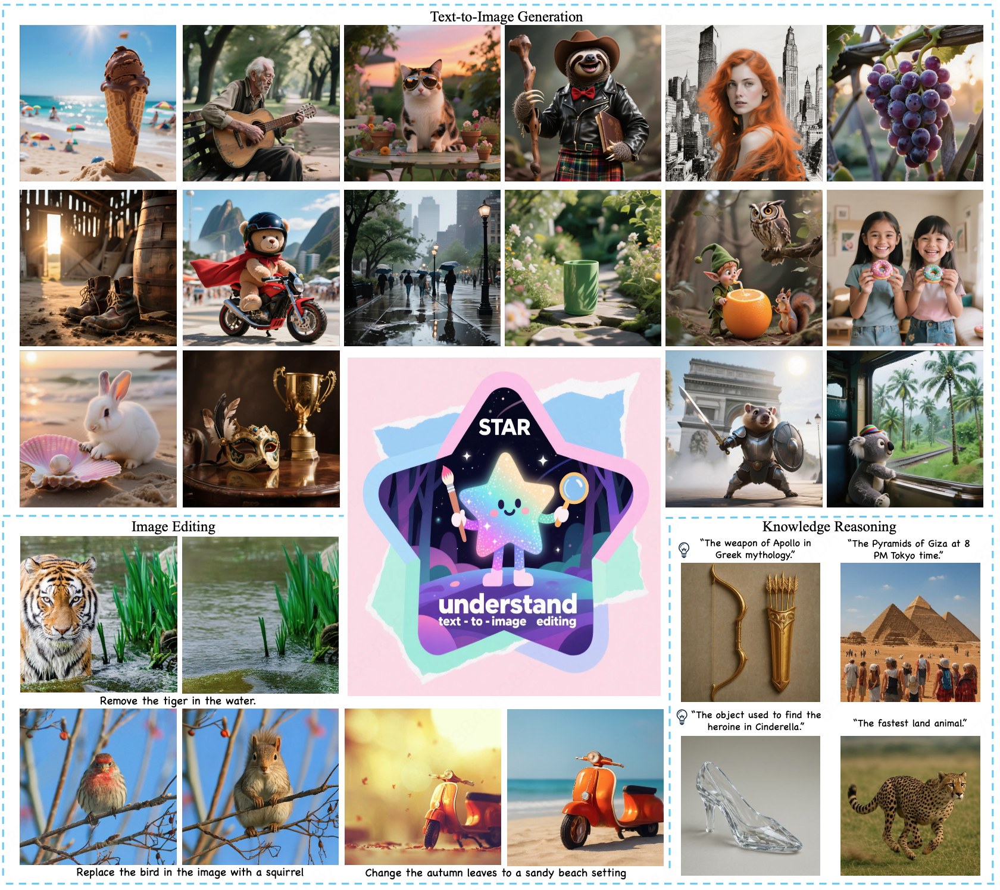
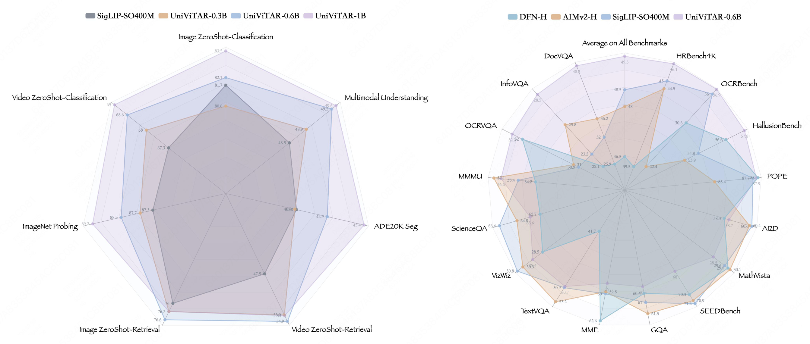
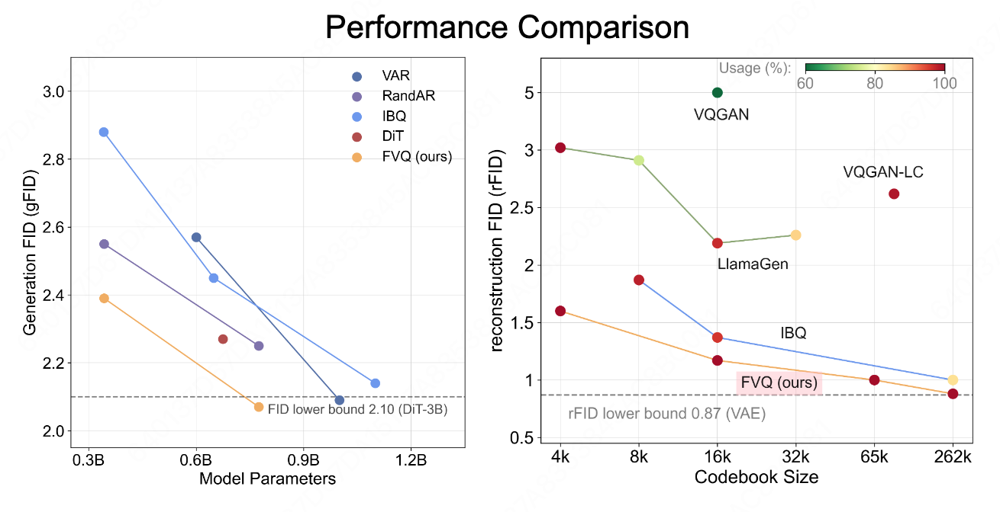
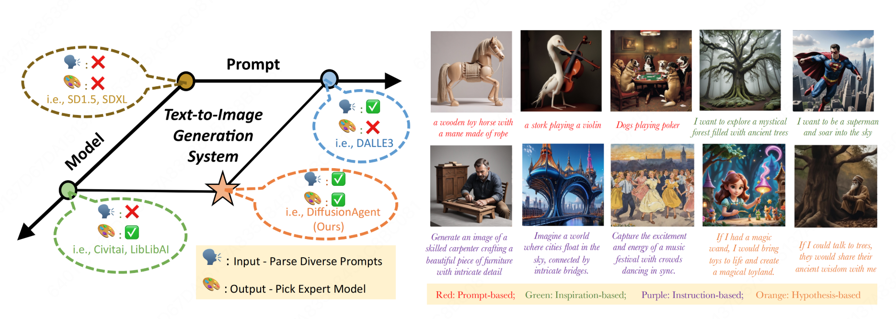
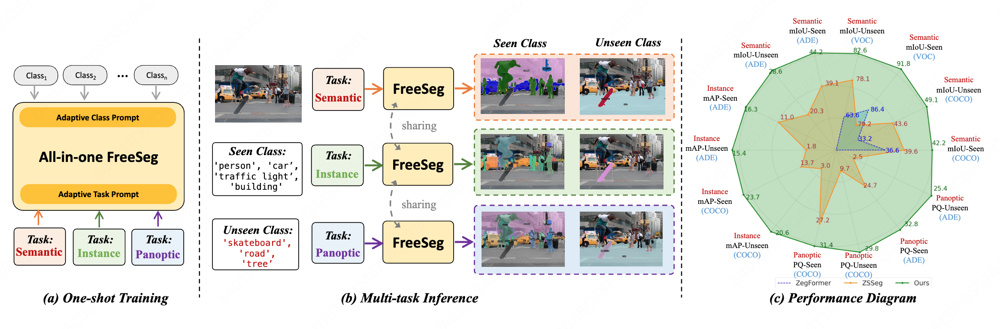
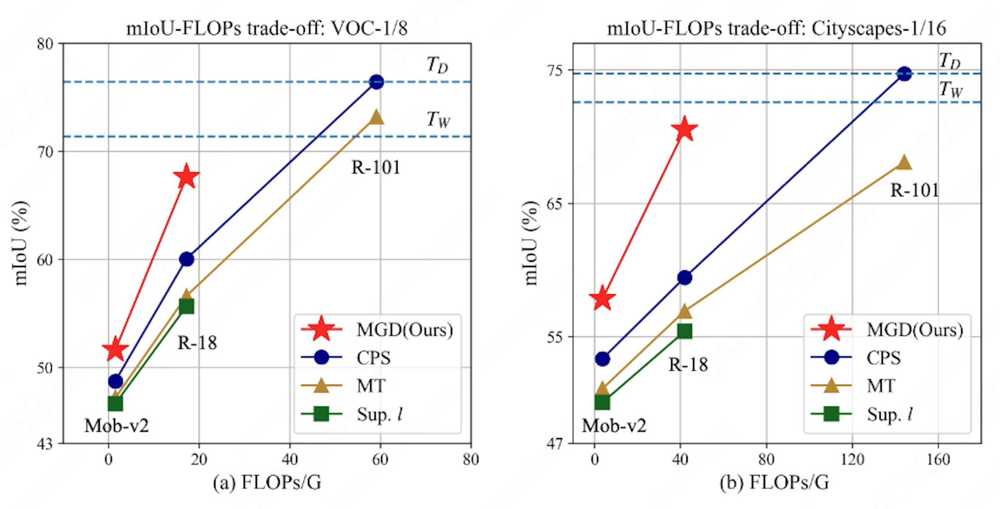
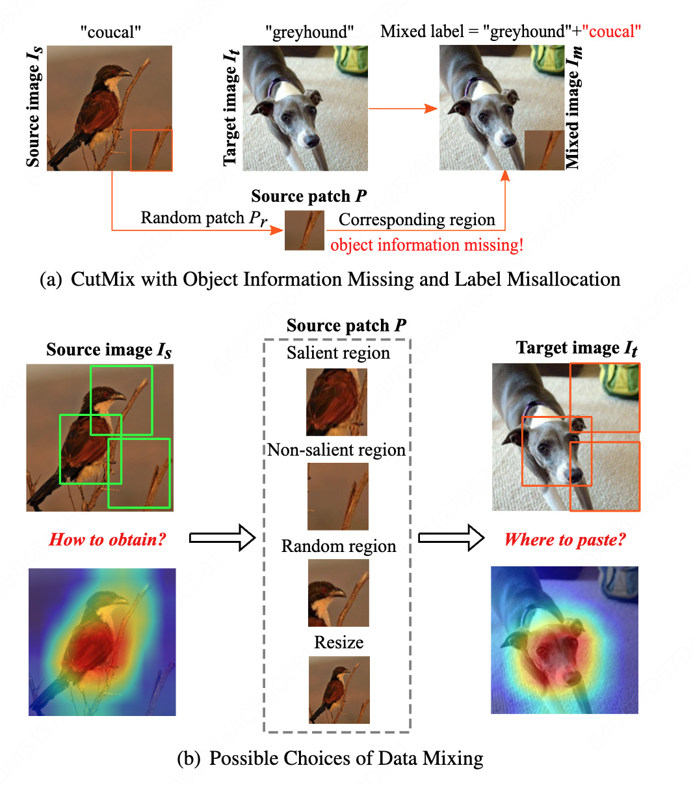
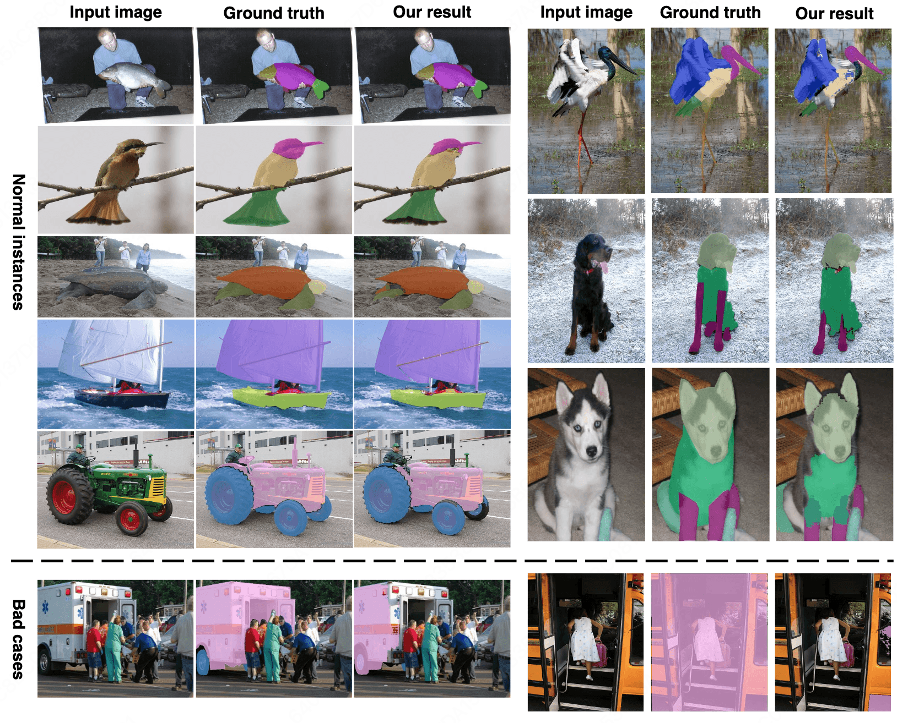

Hi, I'm
Jie Qin
Senior Algorithm Researcher
I am currently a Senior Algorithm Researcher at Meituan (Beidou Talent Program), focusing on unified multimodal large models. I received my Ph.D. in Pattern Recognition and Intelligent Systems from the Institute of Automation, Chinese Academy of Sciences (CASIA) in 2024. My research interests encompass multimodal perception, vision foundation models, and multi-agent collaborative generation systems.
Research Interests
Latest News
-
2026.02
One paper is accepted by CVPR 2026.
-
2026.01
One paper is accepted by ICLR 2026.
-
2025.09
One paper is accepted by NeurIPS 2025.
-
2024.07
One paper is accepted by ECCV 2024.
-
2024.06
Successfully obtained my Ph.D. degree from the Institute of Automation, CAS!
-
2024.02
One paper is accepted by AAAI 2024.
-
2023.03
One paper is accepted by CVPR 2023.
-
2023.09
One paper is accepted by ICCV 2023.
-
2022.09
One paper is accepted by ECCV 2022.
-
2022.02
One paper is accepted by AAAI 2022.
Experience
Senior Algorithm Researcher
Algorithm Intern
Algorithm Intern
Education
Institute of Automation, Chinese Academy of Sciences
Nanjing University of Aeronautics and Astronautics
Ranked Top 3% in the major.
Research Focus
Multimodal Large Language Models (MLLMs)
Focusing on building unified end-to-end frameworks that seamlessly integrate multimodal understanding and generation capabilities. Exploring advanced architectures like stacked autoregressive models.
Vision Foundation Models (VFMs)
Designing scalable and efficient vision transformers capable of handling native resolutions and dynamic sequences. Investigating 100% codebook utilization in vector-quantized networks.
Multimodal Perception & Segmentation
Tackling open-vocabulary, weak-supervised, and semi-supervised image segmentation by aligning cross-modal features and discovering additional supervisions for robust visual perception.
Generative Models & Embodied Agents
Developing LLM-driven multi-agent collaborative frameworks for complex image generation tasks and visual-guided robotic systems for real-world automated measurement and interaction.
Selected Publications

STAR: STacked AutoRegressive Scheme for Unified Multimodal Learning
Proposed a 'Stacked AR Expansion + 4-Stage Progressive Training' scheme and a self-developed FullVQ discretizer, achieving leading generation/editing abilities without compromising understanding metrics.

UniViTAR: Unified Vision Transformer with Native Resolution
Systematically upgraded ViT to construct a unified vision foundation model supporting native resolution and dynamic sequences, achieving SOTA on multiple tasks.

Scalable Training for Vector-Quantized Networks with 100% Codebook Utilization
Proposed FVQ (FullVQ) to optimize code vectors through a compress-process-recover pipeline, achieving 100% codebook utilization.

DiffusionAgent: Navigating Expert Models for Agentic Image Generation
Designed a multi-agent collaborative generation framework driven by LLMs, implementing task decomposition, expert scheduling, and self-optimization via 'Plan-Execute-Reflect' cycles.

FreeSeg: Unified, Universal and Open-Vocabulary Image Segmentation
Proposed a unified multimodal segmentation model fusing cross-modal features for open-vocabulary unified modeling in semantic, instance, and panoptic tasks.

Multi-Granularity Distillation Scheme Towards Lightweight Semi-Supervised Semantic Segmentation
Proposed a multi-granularity distillation scheme (MGD) to facilitate lightweight semi-supervised semantic segmentation.

ResizeMix: Mixing Data while Preserving Object Information and Label Validity
Introduced a novel data augmentation method, ResizeMix, that mixes data by resizing patches to preserve object information and label validity.

Wps-sam: Towards weakly-supervised part segmentation with foundation models
Explored weakly-supervised part segmentation leveraging the prior knowledge from vision foundation models.
Honors & Awards
Academic Services
Journal Reviewer
IEEE TPAMI, IEEE TIP, IJCV, TCSVT, PR
Conference Reviewer
CVPR, ICCV, ECCV, NeurIPS, ICLR, ICML, AAAI, ACM MM, IJCAI